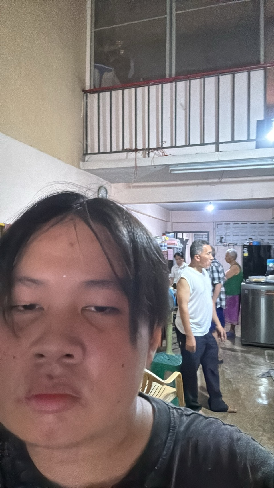

ไปบ้านย่า
ดูเหมือนภาพนี้ปกติแต่จริงๆแล้วความประทับใจของภาพนี้คือ ปู่ของผมได้กลับมาจากนอนพักฝื้นจากการผ่าตัดมะเร็งของเค้าได้ไปนอนพักตลอดช่วงปิดเทอมแล้ววันนี้เค้าก็ได้กลับบ้านมา
ในรอบเกือบ 4 เดือนผมที่อยู่อีก้านนึงเลยต้องรีบขับรถมาหาอย่างรวดเร็วและพาพ่อมาด้วยเพราะบ้านที่ผมอยู่มันไกลจากบ้านปู่ของผมมากเลยรีบขับรถมาพร้อมกับเหงื่อเพราะผมเป็นคนขี้ร้อน
พอถึงปู่ผมก็ดีใจไมได้กลับบ้านนาน แต่ตัวเค้าพร้อมมากเพราะไปนอนพักที่โรงพยาบาลมา